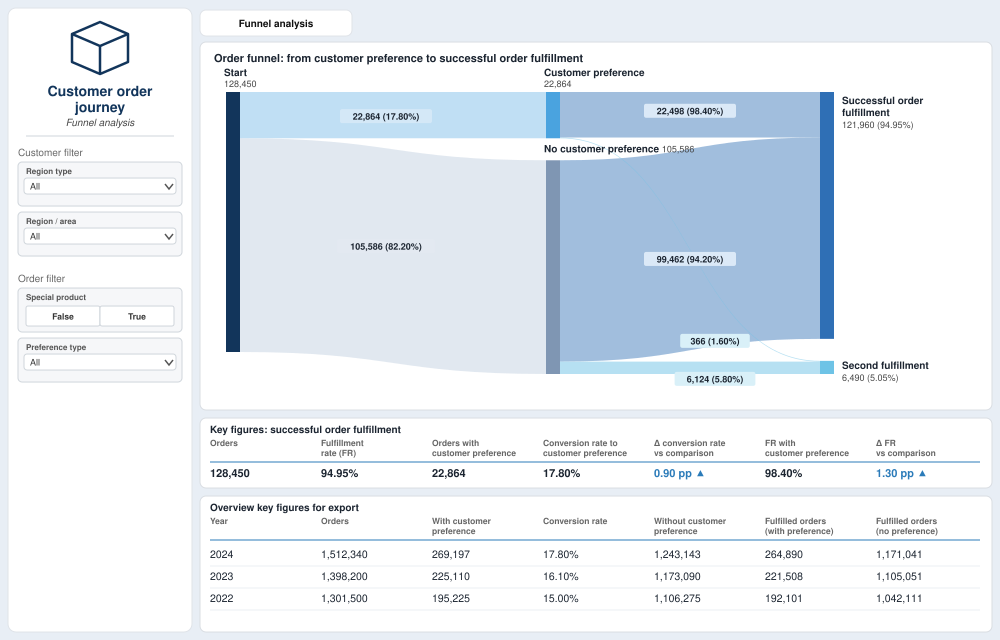

Business Dashboard: One Source of Truth for Key KPIs
Power BI · SQL · Requirements engineering
This case study demonstrates a real case I worked on, shown with synthetic data.
Problem
- Data came from various sources and had to be collected by hand and entered into Excel, which took many hours and caused many mismatches.
- The business needed critical KPIs for the continuous improvement of its processes and as a foundation for new business initiatives.
- The calculation logic had grown complex over many years and was hard to understand.
Solution
A Power BI dashboard that consolidates the data sources into a single source of truth, with a more transparent and straightforward calculation logic that delivers clearer and more understandable analytics. It is used by around 50 users.

Data
Several data sources combined with SQL into one consolidated data model. The demo shown here uses invented numbers that preserve the structure of the real funnel but none of its values.
Approach
- Developed the concept with the business and identified their needs and criteria.
- Understood and documented the business rules, and replaced the old calculation logic with a transparent one.
- Wrote the requirements and validated the data and the implementation.
- Communicated the findings to the business and gave feedback to the development team.
- Supported the development team with any questions during implementation.
Example insight: funnel analysis
The funnel page follows every order from the customer's preference to the fulfillment outcome. In this demo, orders with a customer preference are fulfilled successfully the first time more often than orders without one (98.4% vs. 94.2%), so the business can see how much the preference option contributes and where to focus.
Business value
- Saves more than CHF 1,000 per month through less manual work.
- Replaces many hours of manual data collection with one automated, reliable source.
- Gives the business transparent KPIs for continuous improvement and a foundation for new initiatives.
My role
I developed the concept with the business, identified their needs and business rules, and led requirements engineering and the validation of data and implementation. I communicated findings to the business, gave feedback to the development team and supported them throughout.
Tools
- SQL
- Power BI